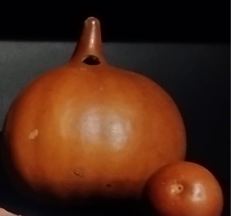
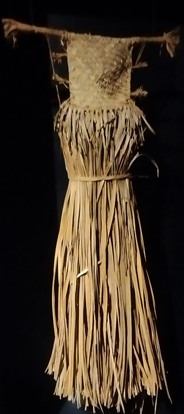
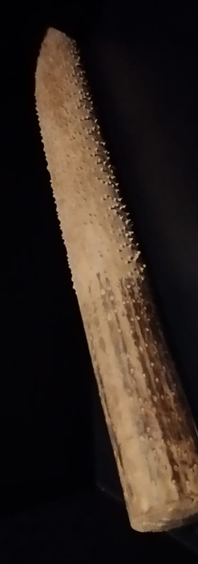
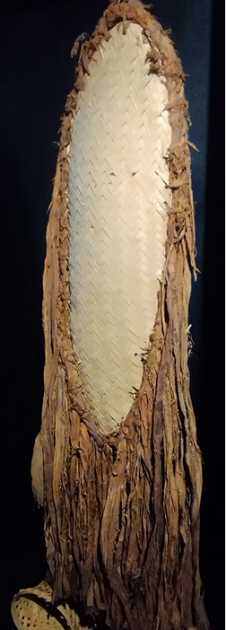

Esta seção apresenta artefatos indígenas das etnias localizadas no Pará, próximo a Marabá
O que é etnologia?
A etnologia se baseia na imersão do pesquisador (etnólogo) no dia a dia do grupo estudado. Essa convivência próxima permite observar, interagir e compreender a perspectiva dos nativos, gerando dados qualitativos ricos a partir da relação entre o etnólogo e o grupo. A pesquisa de campo etnográfica busca um conhecimento profundo e contextualizado das práticas sociais.

Cabaça: fruto que após seco, torna-se oco e rígido, pode ser utilizado como recipiente ou chocalho.

1. Vestido

2. Paxiúba: utilizado como ralador

3. Máscara
QUER CONHECER MAIS OBRAS
COMO ESSAS?
Venha ver de perto e nos faça uma visita!